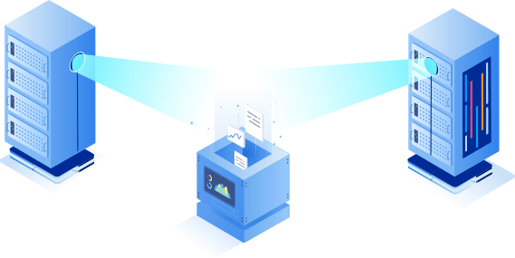
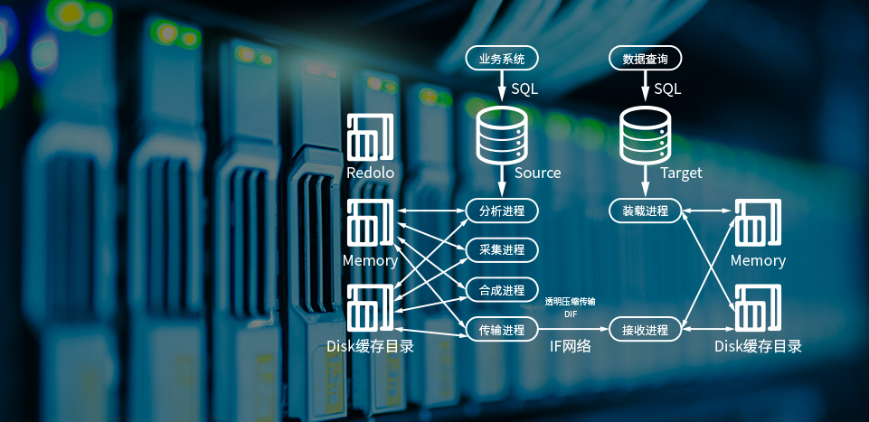

方案概述

数据库容灾方式根据硬件架构及应用软件主要分为：
针对X86架构下SQL Server的容灾解决方案
针对X86架构下Mysql的容灾解决方案
针对X86架构下Oracle单一数据库的容灾解决方案
以上三种方案主要通过i2Availability数据实时保护应用高可用来进行数据库业务保护。
针对X86架构下Oracle RAC集群的容灾解决方案，针对小机架构下的Oracle RAC集群的容灾解决方案，以上两种方案主要通过i2Active redolog的方式来进行数据库业务保护。
i2Availability
在灾备中心部署高性能的X86服务器作为Oracle、My Sql、SQL Server数据库服务器的灾备机，针对数据库服务器实现应用级别的实时复制及高可用。
i2Availability基于实时数据复制技术，首先将数据库服务器中的数据库文件实时传输至灾备服务器，确保两端的数据一致，如出现生产服务器故障即将生产应用无缝地动态的切换到灾备中心上，实现业务的连续性。

i2Active
在灾备中心部署高性能的X86服务器作为Oracle数据库服务器的灾备机，针对Oralce RAC数据库服务器实现数据库级别的实时复制及高可用。采用是基于redolog日志分析技术的Oracle数据实时复制。通过SCN(Oracle System hange Number)控制机制，完整将数据从省信息中心复制到灾备中心的目标端上。
复制可细粒度到用户或者表级别，传递交易指令，传输数据量极小，可以保证在低带宽下实现低延时的数据异步复制。